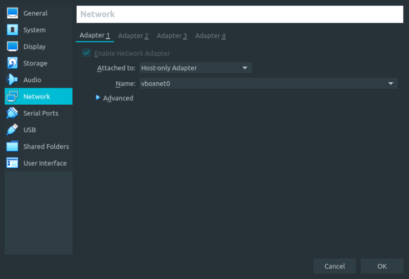
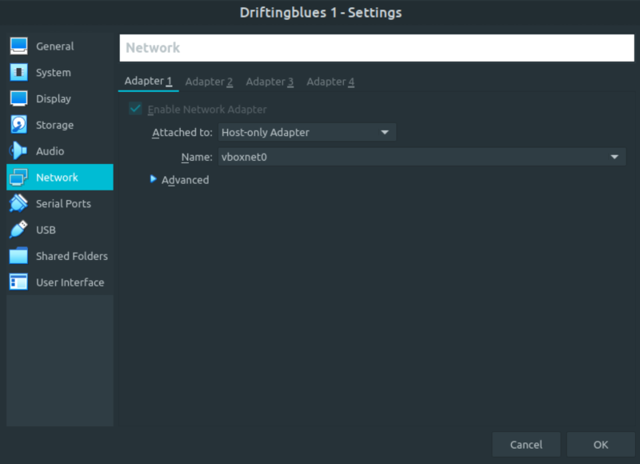
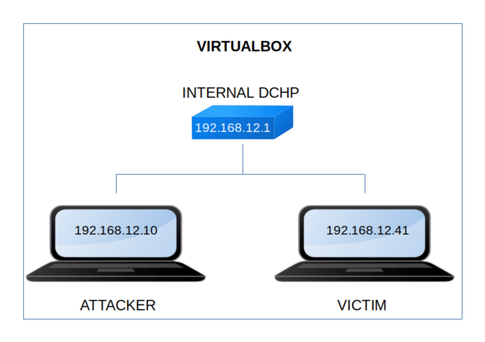

DriftingBlues 1
▸ DriftingBlues 1
▸ 1. Scan Network
▸ 2. Finding Services and Ports
▸ 3. Enumerate
▸ 3.1 noteforkingfish.txt
▸ 3.2 Webserver with gobuster
▸ 3.3 Vhost test.driftingblues.box
▸ 4. Exploitation
▸ 4.1 Find name with password list via SSH
▸ 5. Privilege Escalation
▸ 5.1 Linpeas.sh
▸ 5.2 pspy2 – Unprivileged Linux Process Snooping
▸ 5.3 Create a custom backdoor
▸ 5.4 Get the flag
Difficulty: Easy.
Flag: 1 flag.
Learning:
• Reconnaissance
Scan Network
Find services
• Enumerate
Decode Base64
Decode Ook
Look for domains and subdomains with "gobuster"
Enumerate the vhost with “nikto”
• Exploitation
Find username with passwork with “
• Privilege Escalation
Search for possible paths to escalate privileges with “linpeas.sh”
Snoop on processes with “pspy2”
Create a custom “bash” backdoor
• Download (Mirror): https://download.vulnhub.com/driftingblues/driftingblues.ova
• Download (Torrent): https://download.vulnhub.com/driftingblues/driftingblues.ova.torrent
Install the machine on VirtualBox:
1. Download the file.
2. On Virtualbox choose File->Import Appliance.
3. Select the file “ova”.
4. Accept to import.


Watch your Machine IP.
$ ifconfig
Output:

Diagram
